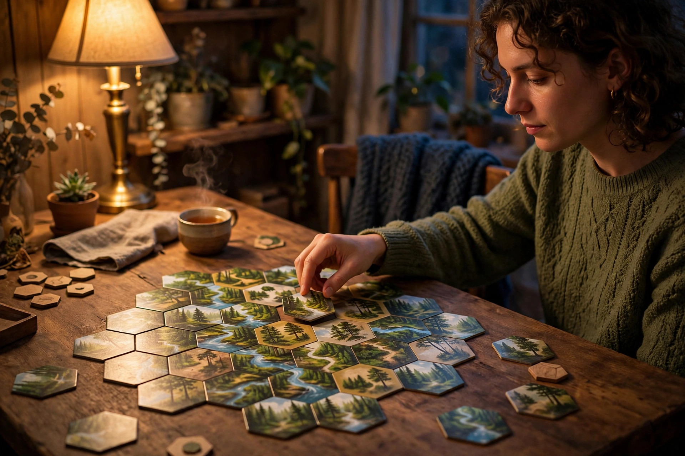

Solo board gaming: a starter guide

Playing a board game alone used to sound like a consolation prize. In the modern hobby it is a deliberate, well-populated way to play: publishers design dedicated solo modes, designers build automated opponents, and entire communities exist to compare scores and swap advice. Solo play asks nothing of anyone's calendar, lets a game be learned at an unhurried pace, and turns a favourite box from an occasional event into something that can reach the table on an ordinary weeknight. This guide sorts solo gaming into its three real structures, compares them honestly, and gives a first-session routine that keeps the barrier as low as possible.
The three structures of solo play
Almost every solo experience on a shelf belongs to one of three families. The first is the true solo design: a game built for one player from the start, where the puzzle, scoring, or scenario is the opponent. The second is the cooperative game played solo: because a co-op's opposition is already the game system, one person can run it alone — either one-handed, controlling a single character, or multi-handed, managing two or more roles as a group of one. Guides to solo play note that many players find controlling two characters gives a better experience than the number official solo rules suggest, because cooperative decisions stay interesting when more than one role is in play. The third family is the automa: an automated opponent, typically a deck of cards or a dice system, that simulates a rival player. The term was coined by designer Morten Monrad Pedersen during his work on Viticulture, and automa systems range from very simple to genuinely demanding to operate.
| Structure | What opposes you | Upkeep | Best first fit if you… |
|---|---|---|---|
| True solo design | The game's puzzle or scenario and a score target | Lowest — no simulated player to run | Want a calm, self-contained session |
| Co-op played solo | The game system, as in group co-op play | Moderate — you run every role yourself | Already own a co-op, or love team-style decisions |
| Automa opponent | A card- or dice-driven simulated rival | Highest — you operate the opponent each round | Miss head-to-head competition most |
The upkeep row is the one new solo players underestimate. An automa can deliver the closest thing to a real opponent, but every minute spent running it is a minute not spent on your own decisions, and for some players that bookkeeping quietly eats the pleasure. True solo designs sit at the opposite pole: nothing to simulate, nothing to administer, just the puzzle. Neither is superior — they are different evenings wearing similar boxes.
A verified starting point
Cascadia shows how friendly the on-ramp can be. It is listed for 1 to 4 players, ages 10 and up, at 30 to 45 minutes, and its solo mode simulates a two-player experience through a cascading market of tiles and tokens — notably without requiring the upkeep of an AI player, while still offering thresholds to beat. That combination — a real game, a short stated session, and no opponent to administer — is exactly what a first solo title should offer. Solo guides independently name it among the gentlest entry points, alongside small card games such as Onirim, and the pattern across recommendations is consistent: short, simple to learn, and still a genuine puzzle after the rules are familiar.
There is also a zero-cost doorway worth knowing about. Reporting on solo gaming describes print-and-play games — community-developed games provided free to download and print at home — and thematic solitaire card games playable with an ordinary deck of cards and dice, as legitimate starting points. A newcomer can therefore test whether solo play suits them at all before spending anything, which is the right order of operations for any new hobby corner.
You are not actually alone in this
The pleasant surprise of solo gaming is its community. The 1 Player Guild on BoardGameGeek — the community hub most often pointed to for solo players — was described in national-press coverage as having grown past 13,000 members, and that coverage's advice to newcomers is essentially social: ask experienced solo players questions, use community lists to find a starting game, and treat recommendations as a conversation. Score-sharing does for solo players what win-loss records do for competitive groups: it gives a session a story afterwards. Logging scores, noting which difficulty or scenario was used, and comparing against your own previous results turns isolated sessions into a slow, satisfying campaign of self-improvement — no opponent required, because last month's result is the opponent.
A decision framework for your first solo game
Answer four questions. Session length: how many minutes will you realistically give a weeknight session? Stay inside the game's stated time, and bias short — a finished 30-minute game beats an abandoned 90-minute one every time. Upkeep tolerance: do you want to administer an opponent, or not? Answer honestly; this single preference predicts satisfaction better than any review score. Win condition taste: do you prefer beating a score threshold, completing a scenario, or defeating a simulated rival? Each structure above maps to one answer. Shelf reality: do you already own a cooperative game? If so, its solo mode is a free trial of the whole idea, and the correct first purchase may be no purchase at all. Only after those four answers should theme enter the decision — as a tiebreaker between structurally suitable games, exactly as in group buying.
Your first solo session: a procedure
- Choose short and familiar-shaped. Pick a game with a stated time of 45 minutes or less, ideally one whose structure you picked deliberately using the framework above.
- Learn from a playthrough first. Starter advice across solo guides agrees that watching a playthrough can teach in minutes what a long rulebook teaches slowly; watch once, then set up alongside the rules.
- Set a score goal before turn one. Decide what counts as a good result — a threshold, a completed scenario, simply finishing — so the session has a shape and an ending.
- Play the rules as written, and note mistakes without restarting. Solo play has no rules referee and no audience; log a mistake, finish the session, and correct it next time. Restarting mid-game is the fastest way to make solo play feel like homework.
- Record the result. Date, game, structure, score or outcome, and one sentence on what decided it. Two minutes of logging is what turns one session into a practice.
- Leave the game set up if space allows, or photograph the final state. Either habit lowers the friction of the next session, and friction — not enjoyment — is what usually ends a solo habit.
What success looks like: the session finished inside its planned window, the result is written down, and you can name one specific decision you would make differently next time. When all three are true, solo play is working as designed — the next session practically schedules itself.
Common questions
Is solo just playing both sides? In multi-handed co-op play, partly — but in true solo designs and automa games, no: the opposition is engineered into the system, not improvised by you playing an opponent half-heartedly.
What if a rules mistake ruins a session? It does not, unless you let it. The standard advice to beginners is to keep playing and correct the rule next session; with no other players affected, a mistake is tuition, not a dispute.
Where do solo players actually talk? Start with the BoardGameGeek solo community described above, and with the player community around any specific title you own — solo variants and fan-made automa are commonly shared there.
Solo board gaming is not a lesser version of game night. It is a different pleasure — unhurried, schedulable, and quietly competitive against your own past results. Pick the structure that fits your evenings, keep the first sessions short, write the scores down, and the shelf starts working for you even when nobody else is free.